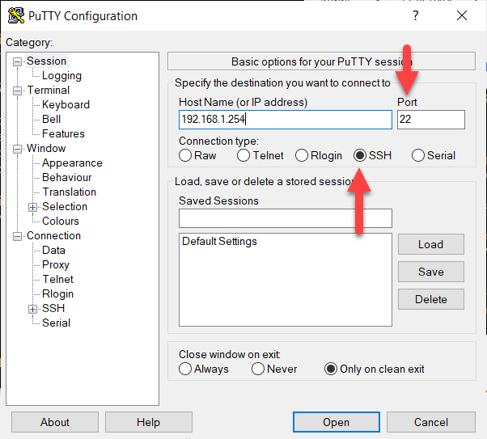
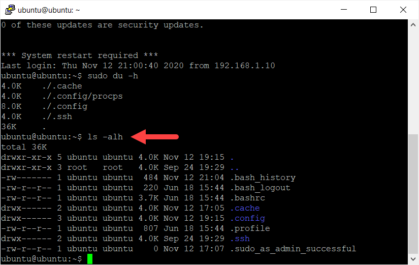
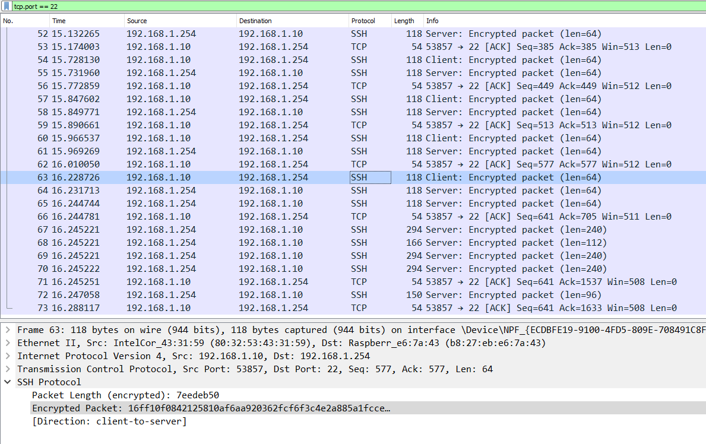

Ondertussen heb je (hopelijk) al een aantal keer het SSH protocol gebruikt. Je hebt dit bijvoorbeeld nodig wanneer je wil aanmelden vanop een andere locatie op een Linux machine of Raspberry PI via de console (terminal).
In Windows gebruik je daarvoor vaak het programma PuTTY. Het enige wat je in dat programma moet doen is een IP adres ingeven van de hostname waarop je wil aanmelden samen met het poortnummer waarop de SSH server draait (standaard 22).

Er is dus sprake van een SSH client (bijvoorbeeld PuTTY) en een SSH server.
SSH is een protocol dat enorm vaak gebruikt wordt en waarschijnlijk zal je hier later, in je professionele loopbaan ook nog mee geconfronteerd worden. De 'voorloper' van SSH is Telnet. De reden waarom SSH gebruikt wordt zit verklapt in de naam: Secure Shell. Alle trafiek wordt versleuteld.
Dit betekent dat je, zelfs al onderschep je de pakketten met Wireshark, niet kan zien welke commando's ingegeven worden.
Commando ingegeven via SSH

Commando onderschept in Wireshark

Dat is natuurlijk niet onbelangrijk want zoals je weet moet je voor je kan commando's ingeven met sudo rechten eerst het wachtwoord ingeven.